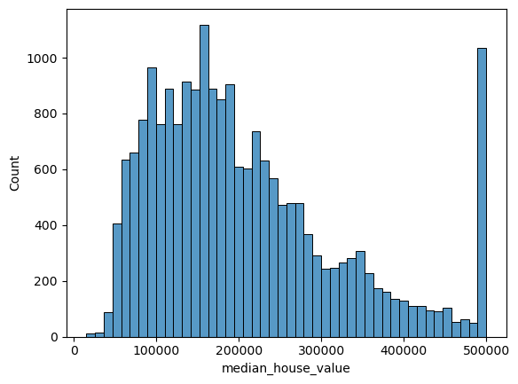
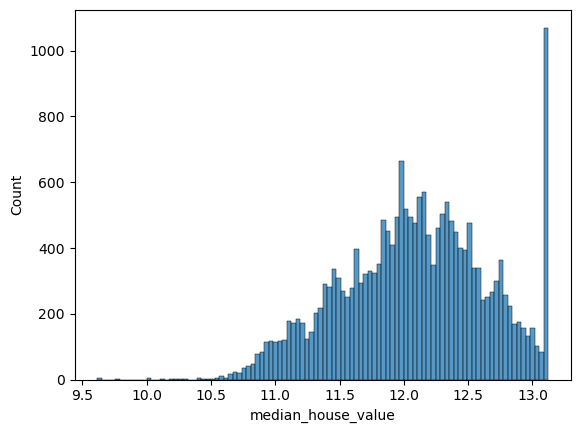

import pandas as pd This is testing the blog publication
data_house=pd.read_csv('housing.csv')data_house.head()| longitude | latitude | housing_median_age | total_rooms | total_bedrooms | population | households | median_income | median_house_value | ocean_proximity | |
|---|---|---|---|---|---|---|---|---|---|---|
| 0 | -122.23 | 37.88 | 41.0 | 880.0 | 129.0 | 322.0 | 126.0 | 8.3252 | 452600.0 | NEAR BAY |
| 1 | -122.22 | 37.86 | 21.0 | 7099.0 | 1106.0 | 2401.0 | 1138.0 | 8.3014 | 358500.0 | NEAR BAY |
| 2 | -122.24 | 37.85 | 52.0 | 1467.0 | 190.0 | 496.0 | 177.0 | 7.2574 | 352100.0 | NEAR BAY |
| 3 | -122.25 | 37.85 | 52.0 | 1274.0 | 235.0 | 558.0 | 219.0 | 5.6431 | 341300.0 | NEAR BAY |
| 4 | -122.25 | 37.85 | 52.0 | 1627.0 | 280.0 | 565.0 | 259.0 | 3.8462 | 342200.0 | NEAR BAY |
data_columns=list(data_house.columns)data_columns['longitude',
'latitude',
'housing_median_age',
'total_rooms',
'total_bedrooms',
'population',
'households',
'median_income',
'median_house_value',
'ocean_proximity']data_columns.remove('ocean_proximity')data_columns['longitude',
'latitude',
'housing_median_age',
'total_rooms',
'total_bedrooms',
'population',
'households',
'median_income',
'median_house_value']house_target="median_house_value"data_columns.remove(house_target)data_columns['longitude',
'latitude',
'housing_median_age',
'total_rooms',
'total_bedrooms',
'population',
'households',
'median_income']data_house.dtypeslongitude float64
latitude float64
housing_median_age float64
total_rooms float64
total_bedrooms float64
population float64
households float64
median_income float64
median_house_value float64
ocean_proximity object
dtype: objectdata_house.shape(20640, 10)#Selecting column with a particular dtype :1
data_house.select_dtypes(include=object)| ocean_proximity | |
|---|---|
| 0 | NEAR BAY |
| 1 | NEAR BAY |
| 2 | NEAR BAY |
| 3 | NEAR BAY |
| 4 | NEAR BAY |
| ... | ... |
| 20635 | INLAND |
| 20636 | INLAND |
| 20637 | INLAND |
| 20638 | INLAND |
| 20639 | INLAND |
20640 rows × 1 columns
#Selecting column with a particular dtype :2
data_house.loc[:,data_house.dtypes==object]| ocean_proximity | |
|---|---|
| 0 | NEAR BAY |
| 1 | NEAR BAY |
| 2 | NEAR BAY |
| 3 | NEAR BAY |
| 4 | NEAR BAY |
| ... | ... |
| 20635 | INLAND |
| 20636 | INLAND |
| 20637 | INLAND |
| 20638 | INLAND |
| 20639 | INLAND |
20640 rows × 1 columns
EDA
import matplotlib.pyplot as plt
import numpy as np
import seaborn as sns
%matplotlib inlinesns.histplot(data_house[house_target])<AxesSubplot:xlabel='median_house_value', ylabel='Count'>
sns.histplot(np.log1p(data_house[house_target]),bins=100)<AxesSubplot:xlabel='median_house_value', ylabel='Count'>
data_house.isnull().sum()longitude 0
latitude 0
housing_median_age 0
total_rooms 0
total_bedrooms 207
population 0
households 0
median_income 0
median_house_value 0
ocean_proximity 0
dtype: int64data_house["total_bedrooms"].fillna(value=mean_bedroom,inplace=True)data_house.isnull().sum()data_house.columnsdata_house.drop('ocean_proximity',inplace=True,axis=1)data_house.columns#Q2
data_house['population'].median()#Shuffle
# Pandas dataframe method
data_house.sample(frac=1,random_state=42).reset_index()| index | longitude | latitude | housing_median_age | total_rooms | total_bedrooms | population | households | median_income | median_house_value | ocean_proximity | |
|---|---|---|---|---|---|---|---|---|---|---|---|
| 0 | 20046 | -119.01 | 36.06 | 25.0 | 1505.0 | NaN | 1392.0 | 359.0 | 1.6812 | 47700.0 | INLAND |
| 1 | 3024 | -119.46 | 35.14 | 30.0 | 2943.0 | NaN | 1565.0 | 584.0 | 2.5313 | 45800.0 | INLAND |
| 2 | 15663 | -122.44 | 37.80 | 52.0 | 3830.0 | NaN | 1310.0 | 963.0 | 3.4801 | 500001.0 | NEAR BAY |
| 3 | 20484 | -118.72 | 34.28 | 17.0 | 3051.0 | NaN | 1705.0 | 495.0 | 5.7376 | 218600.0 | <1H OCEAN |
| 4 | 9814 | -121.93 | 36.62 | 34.0 | 2351.0 | NaN | 1063.0 | 428.0 | 3.7250 | 278000.0 | NEAR OCEAN |
| ... | ... | ... | ... | ... | ... | ... | ... | ... | ... | ... | ... |
| 20635 | 11284 | -117.96 | 33.78 | 35.0 | 1330.0 | 201.0 | 658.0 | 217.0 | 6.3700 | 229200.0 | <1H OCEAN |
| 20636 | 11964 | -117.43 | 34.02 | 33.0 | 3084.0 | 570.0 | 1753.0 | 449.0 | 3.0500 | 97800.0 | INLAND |
| 20637 | 5390 | -118.38 | 34.03 | 36.0 | 2101.0 | 569.0 | 1756.0 | 527.0 | 2.9344 | 222100.0 | <1H OCEAN |
| 20638 | 860 | -121.96 | 37.58 | 15.0 | 3575.0 | 597.0 | 1777.0 | 559.0 | 5.7192 | 283500.0 | <1H OCEAN |
| 20639 | 15795 | -122.42 | 37.77 | 52.0 | 4226.0 | 1315.0 | 2619.0 | 1242.0 | 2.5755 | 325000.0 | NEAR BAY |
20640 rows × 11 columns
from sklearn.utils import shuffle
data_house_shuffle=shuffle(data_house,random_state=1)X=data_house[data_columns]
y=data_house[house_target]
print(X.shape, y.shape)(20640, 8) (20640,)data_columns['longitude',
'latitude',
'housing_median_age',
'total_rooms',
'total_bedrooms',
'population',
'households',
'median_income']from sklearn.model_selection import train_test_splitX_training, X_test=train_test_split(X,test_size=0.2)
y_training, y_test=train_test_split(y,test_size=0.2)print(X_training.shape,X_test.shape,y_training.shape,y_test.shape)X_train,X_val=train_test_split(X_training,test_size=0.1)
y_train,y_val=train_test_split(y_training,test_size=0.1)